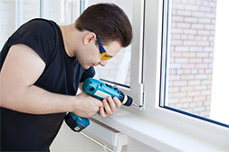

Пластиковые окна ПВХ – это надёжные и безопасные конструкции, при надлежащем уходе они способны прослужить много лет. Чтобы они продолжали защищать от шума и холода, и функционировали без нареканий, следует своевременно устранять дефекты и проводить ремонт. Мы предлагаем профессиональное обслуживание с участием квалифицированных специалистов.
Основные проблемы пластиковых окон
запотевание окна
продувание и промерзание окна
образование конденсата
поломка фурнитуры
поломка москитных сеток
износ уплотнителей
заедающие рукоятки или замки на окнах
Мы предлагаем услуги:

ремонт окон любых видов от всех производителей
ремонт и замена фурнитуры для окон любых производителей
устранение люфта и провисания створок
решение проблемы с запотеванием и обильным конденсатом
установка отливов, москитных сеток, жалюзи, электропривода
замена деталей – замки, ручки, уплотнители
установка москитных сеток
Оставьте заявку
для расчета стоимости ремонта
Мы обслуживаем любые оконные конструкции от различных производителей. Специалисты монтажных бригад обладают богатым опытом, и благодаря этому, мы готовы быстро устранить любые дефекты в кратчайший срок. Обслуживание и ремонт осуществляется в полном соответствии с требованиями ГОСТ, а также с учётом рекомендаций производителей.
Мы проводим плановый осмотр оконных систем, а также устраняем недостатки неправильного монтажа.
Звоните нам уже сегодня и убедитесь в высоком профессионализме наших мастеров!
Мы даем 100% гарантию качества на ремонт окон.
Если в течении 1 года Вам что-то не понравится, мы вернем Вам 100% заплаченных денег.
Как мы работаем
оставляете заявку или звоните нам по телефону 8 495 111 11 11
уточняем по телефону причины неисправности
сообщаем вам стоимость и срок ремонта
наш выездной мастер приедет к вам и устранит неисправность
Отзывы наших клиентов
Елена, 43 года
Не люблю писать че то там, но мать просто настояла. Она у меня пенсионерка.
В общем в прошлом году поставила окна, уже зимой начали потеть.
Позвонила в одну из компаний по ремонту окон , приехали горе установщики что то поделали плакть окошки перестали, но теперь перестали нормально открываться и закрывать.
Не знаю как зиму бы пережили, но во дворе у нас живет пенсионерка тетя Клава, вот она то и дала телефон этой компании.
Позвонила в компаниб Жилдомсервис,все исправили за полчаса. Мама просто не нарадуется, а мне даже где-то через неделю кто-то из фирмы звонит интересуется, как работает окно, я в шоке! Спасибо большое за помощь.
Игорь, 32 года
Сегодня сложное время выбора, много фирм, услуг. И нам, потребителям разобраться кто делает что-то лучшее без опыта просто не возможно, и я обычно разделяю на понятие хорошее и лучшее, Потому что хорошее всегда враг лучшему.
Казалось бы нужно сделать, точнее отремонтировать окно, всего-то на всего поменять штульп, я до этого и не знал такого понятия, а это такая маленькая деталь, которая крепится к створке.
Так вот ребята, по совету коллеги на работе из компании Жилдомсервис.,
Специалисты устранили проблему нормального открывания створки буквально минут за 20 вообще молодцы.
Приехали сразу же после того как приняли заявку – сказали, что ремонтировали окно в соседнем подъезде и мне просто повезло.
Понравился профессионализм молодых людей. Если бы все так работали.
Вадим, 23 года
Поставили три года назад окошки и они перестали открываться, сам пробовал сделать – не получилось.
Позвонил в компанию Жилдомсервис, приехали в этот же день - управились наверное за час убрали мусор за собой молодцы.
Вообще большое ребята молодцы, спасибо.
Саша, 23 года
Сегодня сложное время выбора, много фирм, услуг. И нам, потребителям разобраться кто делает что-то лучшее без опыта просто не возможно, и я обычно разделяю на понятие хорошее и лучшее, Потому что хорошее всегда враг лучшему.
Казалось бы нужно сделать, точнее отремонтировать окно, всего-то на всего поменять штульп, я до этого и не знал такого понятия, а это такая маленькая деталь, которая крепится к створке.
Так вот ребята, по совету коллеги на работе из компании Жилдомсервис.,
Специалисты устранили проблему нормального открывания створки буквально минут за 20 вообще молодцы.
Приехали сразу же после того как приняли заявку – сказали, что ремонтировали окно в соседнем подъезде и мне просто повезло.
Понравился профессионализм молодых людей. Если бы все так работали.
Оставьте заявку
для расчета стоимости ремонта
Жилдомсервис Все права защищены 2015
Москва, Новогиреевская 36 Тел.: +7 (495) 111-11-11